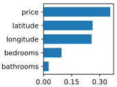
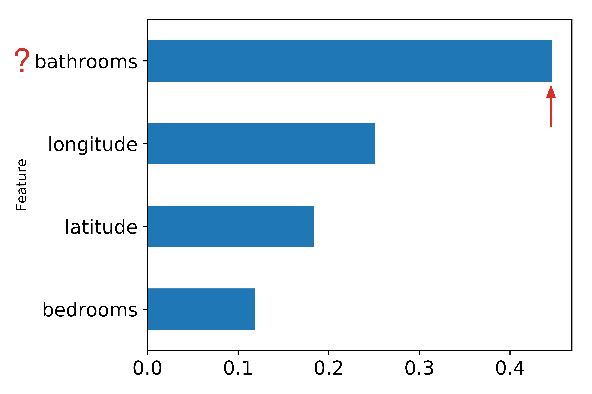

Beware Default Random Forest Importances
Terence Parr, Chris, Kerem, and Jeremy Howard

Figure 1(a). scikit-learn default importances for Random Forest classifier predicting apartment interest level (low, medium, high) using 5 features + a column of random numbers. Highly suspicious that random column is much more important than the number of bedrooms.
|

Figure 1(b). scikit-learn default importances for Random Forest regressor predicting apartment rental price from 4 features + a column of random numbers. Random column is last, as we would expect but the importance of the number of bathrooms for predicting price is highly suspicious.
|

Figure 2(a). Importances derived by dropping each column and retraining scikit-learn Random Forest classifier. Predicting apartment interest level (low, medium, high) using 5 features + a column of random numbers. The importance of the random column is at the bottom as it should be.
| 
Figure 2(b). Importances derived by dropping each column and retraining scikit-learn Random Forest regressor. Predicting apartment rental price from 4 features + a column of random numbers. The importance of the random column is at the bottom as it should be.
|

Figure 3(a). Importances derived by permuting each column and computing drop in out-of-bag accuracy using scikit-learn Random Forest classifier.
| 
Figure 3(b). Importances derived by permuting each column and computing drop in out-of-bag R^2 using scikit-learn regressor. Predicting apartment rental price from 4 features + a column of random numbers.
|
import pandas as pd
df = pd.read_csv("data/rent.csv")
df.head(3) # dump first 3 rows
from sklearn.ensemble import RandomForestClassifier
X_train, y_train = df.drop('interest_level',axis=1), df['interest_level']
rf = RandomForestClassifier(n_estimators=100,
min_samples_leaf=5,
n_jobs=-1,
oob_score=True)
rf.fit(X_train, y_train)
print(f"RF OOB accuracy {rf.oob_score_:.4f}")
import matplotlib.pyplot as plt
def plot_importances(columns,importances,figsize=None):
I = pd.DataFrame(data={'Feature':columns, 'Importance':importances})
I = I.set_index('Feature')
I = I.sort_values('Importance', ascending=True)
I.plot(kind='barh', figsize=figsize, legend=False, fontsize=16)
plt.tight_layout()
plt.show()
plot_importances(X_train.columns,rf.feature_importances_)

Figure 1(a). RF classifier predicting apartment interest level (low, medium, high) using 5 features. Nothing suspicious.
Figure 1(b). RF classifier predicting apartment interest level (low, medium, high) using 5 features + a column of random numbers. Highly suspicious that random column is much more important than the number of bedrooms.
import numpy as np
from sklearn.base import clone
X_train2 = X_train.copy()
X_train2['random'] = np.random.random(size=len(X_train2))
rf2 = clone(rf)
rf2.fit(X_train2, y_train)
plot_importances(X_train2.columns,rf2.feature_importances_)
dfcls = df.copy()
dfcls['price'] = np.log(dfcls['price'])
X_train, y_train = dfcls.drop(['price','interest_level'],axis=1), dfcls['price']
dfcls.head(2)
from sklearn.ensemble import RandomForestRegressor
rfcls = RandomForestRegressor(n_estimators=100,
min_samples_leaf=1,
n_jobs=-1,
oob_score=True)
rfcls.fit(X_train, y_train)
plot_importances(X_train.columns, rfcls.feature_importances_)
X_train2 = X_train.copy()
X_train2['random'] = np.random.random(size=len(X_train2))
rfcls2 = clone(rfcls)
rfcls2.fit(X_train2, y_train)
plot_importances(X_train2.columns,rfcls2.feature_importances_)

Figure 2(a). RF regressor predicting apartment rental price from 4 features. Highly suspicious that the number of bathrooms is the most important predictor of price.
Figure 2(b). RF regressor predicting apartment rental price from 4 features + a column of random numbers. Random column is last, as we would expect but the importance of the number of bathrooms is still suspicious.